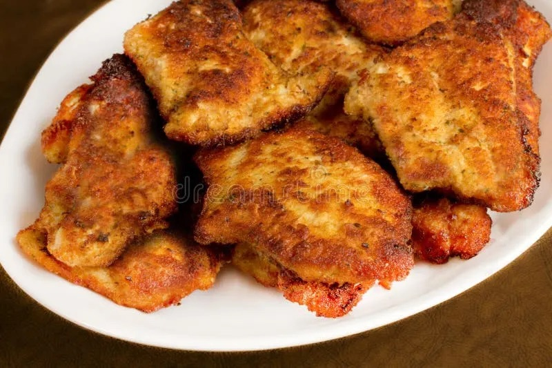

Go Back to Home Page
Chicken Cutlets

Ingredients
- Boneless, skinless chicken breasts (2 lbs)
- All-purpose flour (1 cup)
- Large eggs (3 beaten)
- Panko breadcrumbs (1 cup)
- Grated Parmesan or Pecorino Romano cheese (1/4 cup)
- Fresh Italian flat-leaf parsley (3 tablespoons)
- Kosher salt (1 1/2 teaspoons)
- Freshly ground black pepper (1/2 teaspoon)
- Olive oil or neutral oil (1 to 1 1/2 cups)
Steps
- Place the chicken breasts on a cutting board. If thick, slice them horizontally in half to create thinner cutlets. Pat each cutlet dry with paper towels to help with browning and crispiness.
- Place a cutlet between two sheets of plastic wrap. Using a meat mallet, rolling pin, or wine bottle, pound it to an even thickness of about 1/4 inch (6mm). Repeat with all cutlets.
- Season each cutlet on both sides with a pinch of salt and pepper.
- Set up your breading station: Place flour in the first bowl, beaten eggs in the second, and a mixture of panko, cheese, parsley, and remaining salt and pepper in the third bowl.
- Dredge one chicken cutlet in the flour, shaking off excess. Dip it into the egg mixture, allowing excess to drip off. Transfer to the breadcrumb mixture and press firmly on both sides to ensure full, even coating. Place the breaded cutlet on a clean plate and repeat with the remaining pieces.
- Heat oil in a large skillet over medium-high heat until it reaches 350°F - 375°F (175°C - 190°C). A test with a small piece of breadcrumb should sizzle immediately but not smoke.
- Carefully place 1-3 cutlets in the hot oil, avoiding overcrowding the pan. Fry for 3-5 minutes per side, or until golden brown and crispy. Adjust heat as needed to maintain a steady, vigorous bubble.
- Use tongs to transfer the cooked cutlets to a wire rack or paper towel-lined plate to drain excess oil. Sprinkle lightly with salt while hot.
- Serve immediately with lemon wedges and arugula, or enjoy as desired.
Go Back to Home Page